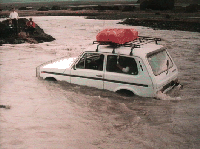

|
The Land Beyond þ
|
|
|
[Last week I went to visit J&K in Iceland.. quickly
tiring of their company, I ran off to discover what else this little
bubbling island (pardon the pun) had to offer]
Foreign anglers have been coming to Iceland for almost a century and a half. Their common goal has been to catch wild poached salmon. Many have left with unforgettable memories, to come back another day. My guide, Bjarni Frostason drives up a narrow road which winds up the shore of the Langá river. Some 1280 salmon are taken from the river each year. We stop at Bændahöllin Lodge where we meet an English sportfisher named Thomas. |
|

Thomas takes an interesting shortcut on the Langá |
Thomas is this really large guy with smile so big you think he might want to kill you. He's bald.. really bald. His eyebrows were burnt off skydiving. He's leading this group of Adventure Tourists like myself.. mostly Australians and Germans. We decide to join their group as he and Bjarni seem to know each other quite well, and the language problem will be somewhat resolved. Bjarni's interpretation of the English language is... err.. creative. So we all pile into Thomas's Ladda and drive to a point in the Langá called Silvergaffel. This is a point in the river where a portion branches off and becomes Fejkarlangá. The banks of the Silvergaffel are sandy, and perfect spawning grounds for the Salmon. |
|
See this is where the really unique thing happens. The Salmon swim up to the
Silvergaffel, spawn, and then in their weakened condition, float back down
the river to die. A portion of these are pushed into the
Fejkarlangá which runs into one of icelands many natural
hotsprings. It's here th at Bjarni and Thomas string a net across the
downriver side of the spring to ensure that our salmon stay there for the
essential 20-25 minutes it takes for them to cook. In the meantime we
gather natural herbs that line the banks of the river, and unpack the
butter we brought with us. We open a couple of bottles of wine, and are
treated to one of the wold's great delicacies. Fantastic.
|
|